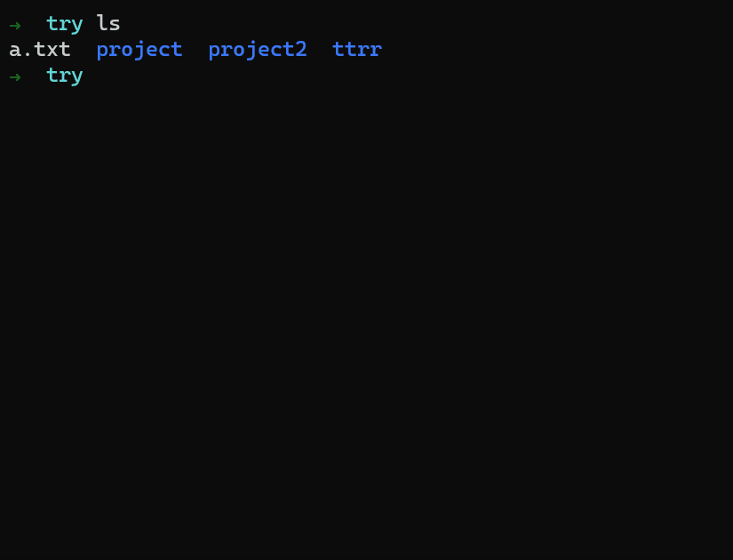
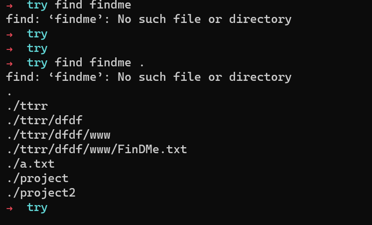
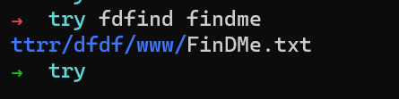
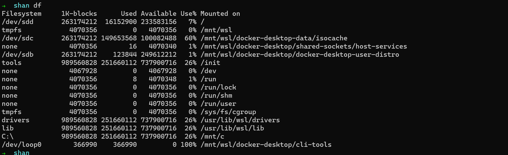
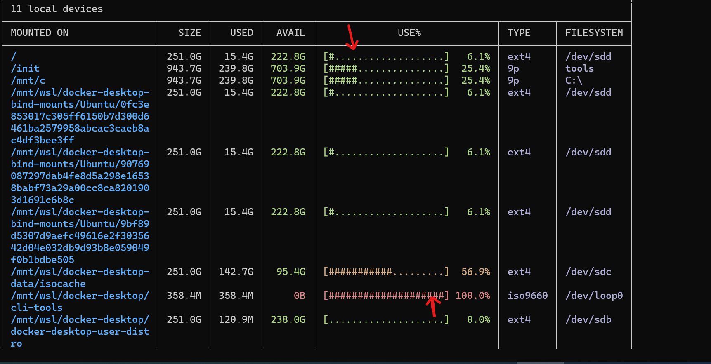
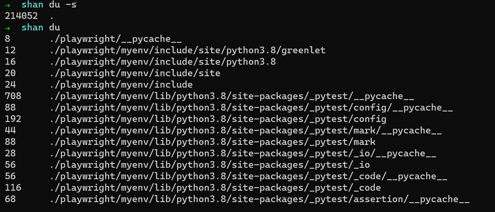
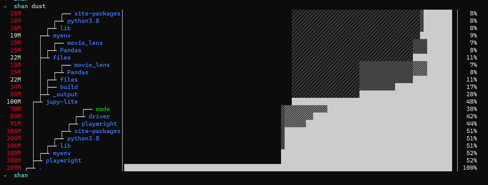
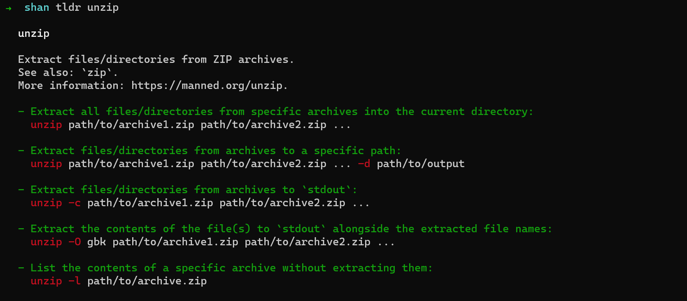

The Most Useful Command Line Tools (2023 edition)

In the last few years, there has been a renaissance in command-line utilities. If you are still using utilities written 30 years ago (groan) you will be in for a surprise. The functionality might be the same but the UX(or is it developer experience) is a million times better.
These are some of the best command line utilities I've come across, ones I highly recommend.
Zsh shell with Oh-My-Zsh
Links
Install Zsh: https://gist.github.com/derhuerst/12a1558a4b408b3b2b6e
Oh My zsh: https://ohmyz.sh/
Not technically a command line utility, but a full blown replacement for bash. For a long time, I wondered if it was worth the hassle of learning a new shell, but boy does Zsh blow bash out of the water. So much so that it's the first thing I install on any remote machine, if I plan to use it for more than 10 minutes.
Zsh has a much better UX than bash. Bash allows tab completion, but if you forget the name of the file/folder, or get the case wrong, it won't complete but just sit there stupidly. Even Windows Powershell is better in this regard as it allows case insensitive tab completions. Zsh goes one step further-- if you have multiple files/folders, you can select between them using your cursor:

There are dozens of such small improvements that I can't go over all of them. Like if you type one letter and press up, it shows you the last command you ran. Like if I type g and press up, I get git pull which I ran last
All these minor improvements are great, but the best feature of Zsh is the Oh-my-Zsh add-ons. They contain shortcuts for popular commands which make typing really easy.
As for git, I do
gcam "message"
gp
The above are short cuts for git commit -am "message"; git push
For docker compose instead of:
docker-compose down
docker-compose pull
docker-compose up -detached
I can do:
dcdn
dcpull
dcupd
dcupd is a lot quicker to type than docker-compose up -detached. There are short cuts for all the major utilities.
Zsh is worth the time spent learning it.
FdFind (also known as just fd)
Link: https://github.com/sharkdp/fd
find is my favourite Linux tool, it is super powerful if you want to find files in the current folder or subfolders.
And yet, every time I use it, I pull my hair.
-
The default search is not case sensitive
-
The absolutely worst part-- find expects you to tell you where to search and will exit with a generic error if you don't specify. And each time I scream Just chucking search in the current directory!
Instead, you have to add a . to let it know to search in the current directory. It still doesn't always find the file if you get the case wrong:

Above it just lists all the files in the directory and expects you to manually search through it-- I guess? Because I have nothing better to do?
Fd automatically searches in the current directory, searches case insensitively

And it colour codes the output, so you know which is the directory and which is the file.
And it's super fast.
Duf And Dust
Links:
duf: https://github.com/muesli/duf
dust: https://github.com/bootandy/dust
Duf and Dust as a replacement for duf and du respectively on Linux-- I often use these together so I will talk about them together. As you will see, they both work well together.
du or duf are used to find out how much free space the various drives on your device have. df or dust are used to find out which folders on your drive are taking up the most space.
So if Im seeing disk problems, I'll use duf to find how much free space I have, then dust to find which folders and which subfolders/files are taking up the most space
The problem with both du and df is they dump a lot of info on you and expect you to make sense of them. Again, very poor UX and it's often painful. Previously I've written Python scripts to make sense of this, but the newer duf and dust make this a breeze.
A comparison of df and duf:
df first:

What does 1k-blocks mean? Also, it tells me I have 233583156 bytes free-- what the hell is that? Are we back in the 5.25 inch floppy disk days where you could measure file size in bytes? (There is a flag to get the size in human readable form but I can never remember what it is)
Compare duf:

I can immediately see I have 222GB free. Also look at the Use% column, to which I added an arrow-- it shows me visually that most of my disk is free.
Both show the same data, but I have to spend 10-20 minutes with du finding the correct flags and then understanding the output. In duf I get the same result in 5 seconds.
Now du vs dust:
du first:

du, by default, just dumps everything on the screen-- all the files in all subfolders with their sizes in bytes. Now there are bytes to show the sizes by folder in human readable format, but groan what the chuck.
Now compare dust:

Wow! In a few seconds, I see:
- The playwright folder takes 50% of space
- The jupy-lite takes another big chunk, but a large part of that is the myenv folder, which is my Python virtual environment.
So to save some quick space, I can just delete the myenv folder as I can always recreate it.
This is the default output, no Googling for weird flags or converting bytes to MB/GB in my head.
Duf/Dust rule
tldr
Link: https://github.com/tldr-pages/tldr-python-client
I chucking hate man pages, though everyone else seems to love them. Usually, I just want to know how to use a command to do some fairly basic thing. Instead, I'm given a 500 page man entry that gives every single option, some of which even the developer never used.
95% of the time, you just want the most basic use case: Unzip a file, untar an archive you downloaded
Enter tldr. Originally a web project (https://tldr.ostera.io/) there are many command line versions for it. I prefer https://github.com/tldr-pages/tldr-python-client though there are versions for node etc
Here is the man page for unzip. It's a really long gif because its a long man page:

Now, this isn't even the longest man page I've seen, and it does have examples at the end (not all do). And yet, it's painful to read.
Now compare with tldr:

Short and to the point: It covers 4-5 of the most common use cases.
Let me just emphasise: Don't use man pages, use tldr. At least if you value your time.
Ripgrep
Link: https://github.com/BurntSushi/ripgrep
ripgrep is a superfast tool to search for text / regex pattern inside files. It's much more powerful and faster than standard grep.
If you use Vs Code, the search within files uses ripgrep under the hood, so I'm guessing a lot more people are using the tool than you may expect.
Some Good, but not great ones
These are some tools that I don't find critical, just nice to have
The Fuck
Link https://github.com/nvbn/thefuck
Yes, that is the name: The Fuck
It was a great utility for fixing errors and typos on the command line; but recently I've found it's dead slow. There is an experimental mode to speed things up, but it has been in "experimental" state for years now. It didn't work for me.
So while I used TheFuck a lot, I've sort of moved away from it.
2 good enough
Both of the below add pretty colors to ls and cat-- but I found they aren't that "killer" to replace my workflow. Still good to have.
Exa -- a replacement for ls
Link: https://github.com/ogham/exa